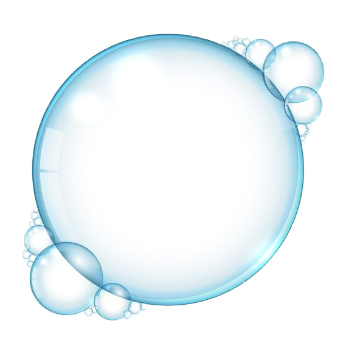
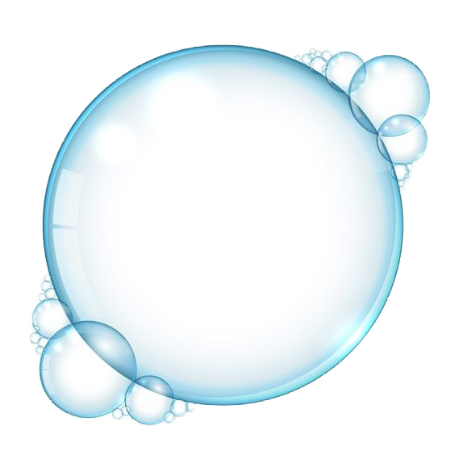

Let's dive deep into the Ocean...

 

Orca Orcas, also known as killer whales, are magnificent creatures found in oceans worldwide. They are incredibly versatile, inhabiting both coastal and open ocean environments. Orcas are known for their impressive hunting abilities and social behavior. They can be found at varying depths within the ocean, depending on their specific activities. While hunting for prey, such as seals or fish, they can be observed at depths ranging from the surface to several hundred meters. Orcas are truly masters of the marine realm, demonstrating their adaptability and intelligence throughout their range.
60m

Giant Oarfish The Giant Oarfish is a remarkable and enigmatic marine creature known for its extraordinary length, with some individuals reaching up to 36 feet or more. This slender, ribbon-like fish inhabits the deep ocean, typically found at depths ranging from 200 to 1,000 meters. However, they can occasionally venture into shallower waters. The Giant Oarfish's striking appearance and mysterious behavior have made it the subject of fascination and curiosity among marine biologists and enthusiasts alike.
200m

Blue Whale The Blue Whale, the largest animal to have ever existed on Earth, inhabits the world's oceans. These colossal marine mammals can be found at depths ranging from around 100 meters to 500 meters, although they are known to dive much deeper during feeding. Blue Whales primarily feed on krill, using their immense size to engulf large quantities of these tiny crustaceans. Their presence in the ocean serves as a testament to the awe-inspiring diversity and grandeur of marine life.
500m

Giant Squid The Giant Squid (Architeuthis dux) is a mysterious and elusive creature inhabiting the depths of the world's oceans. It's known to dwell at extreme depths, typically between 1,000 and 2,500 meters (3,280 to 8,200 feet) below the surface. This deep-sea giant is characterized by its enormous size, with some individuals reaching lengths of up to 43 feet (13 meters) or more. Despite its impressive size, it remains a rarely seen and enigmatic denizen of the ocean's twilight zone, shrouded in darkness and mystery.
900m

Great White shark The Great White shark, known for its powerful presence in the world's oceans, is a formidable apex predator that inhabits both coastal and open waters. These majestic creatures can be found at various depths, typically ranging from the surface waters down to depths of around 4,000 feet (1,200 meters) or more. Their adaptability to different depths allows them to roam across a wide range of oceanic ecosystems, making them one of the most iconic and widely distributed shark species on the planet.
1280m

The Black Swallower The Black Swallower, a fascinating and enigmatic deep-sea fish, is known for its remarkable ability to consume prey much larger than itself. This species, found in the ocean's depths, typically resides at depths of around 2,000 to 2,200 meters, though it has been observed at even greater depths. Its claim to fame lies in its astonishing capacity to devour prey up to ten times its own size, thanks to its highly expandable stomach that allows it to engulf and digest large prey in the pitch-black depths of the ocean.
2250m


Anglerfish Anglerfish are fascinating deep-sea creatures that inhabit some of the darkest and most inhospitable depths of the world's oceans. They can be found at depths ranging from 200 to 2,000 meters (approximately 660 to 6,560 feet) below the surface. These remarkable fish are known for their bioluminescent lure, a specialized appendage that dangles from their heads like a fishing rod, attracting prey in the pitch-black abyss. They have adapted to the extreme pressures and minimal light conditions of the deep sea, making them one of the most unique and mysterious denizens of the ocean's depths.
4500m

Snailfish Snailfish are remarkable creatures found in the deepest reaches of the world's oceans. These remarkable fish are specially adapted to survive under extreme pressure and in complete darkness, residing at depths of up to 8,000 meters or more. They have translucent, gelatinous bodies, which allow them to remain buoyant in the high-pressure environment. Snailfish are true pioneers of the deep, thriving in some of the most inaccessible and mysterious ecosystems on Earth.
7900m